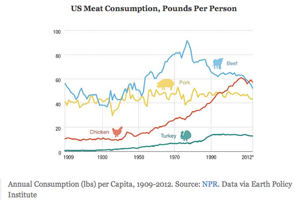
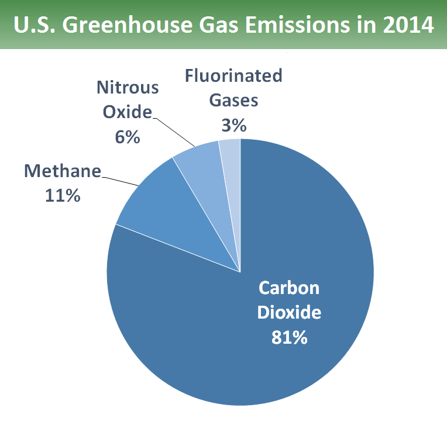
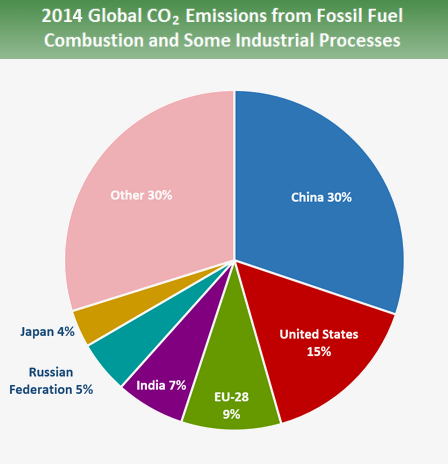

Information
For years, humans have been consuming beef more than any other meat in the world. As the years go on, because of meat production, we are causing global warming to happen. The following grpah will demonstrate the largest emmision that is emmittted in earth, as well as the largest country that emmits it.
 From this graph we can see that CO2 is being emmitted more than any other green house gas by China and USA.
Recipes
| Food | Websites |
|---|---|
| Buger | Link |
| Nuggets | Link |
| Fries | Link |
| Egg-free Brownies | Link |
My team and I found this amazing website that has eco friendly recipies and made these recipies and had others tried them. However, not only did we find this website, we found many more. We advice for you all to look some websites up. Below we will put down a few sites that we find helpful